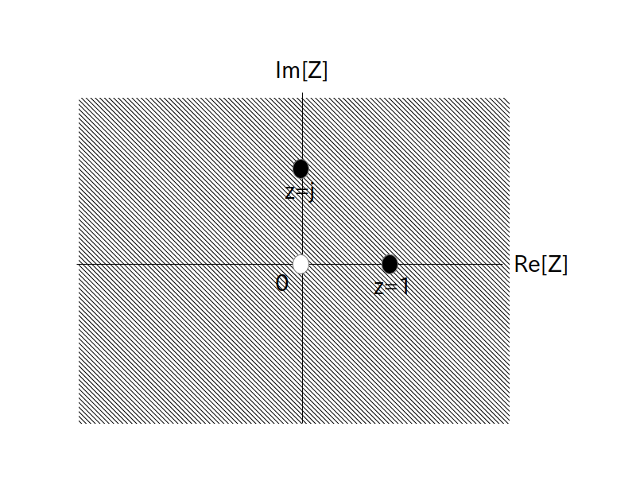

ではZ変換の例として、まずは有限長の時間領域ディジタル信号から考えてみます。
正整数 $\textrm{L}$ を有限とし、$f[0]$から$f[\textrm{L}-1]$まで値が入っていて、残りは全て $f[i]=0, (i=\textrm{L},\textrm{L}+1,\cdots)$ である時間領域ディジタル信号が与えられたとします。
つまり
というディジタル信号を考えます。
このとき $i$ が $\textrm{L}$ を超えると $f[i]$ は全て $0$ となるので、Z変換は以下の式の様に簡単に求まります。
逆変換も簡単に求まります。
もし $\textrm{F}(z)$ が
の形で与えられている時、逆変換は有限長の時間領域ディジタル信号 $f[0], f[1], f[2], \cdots, f[\textrm{L}-1]$ になります。
また収束領域は次の様になります。 とりあえず $z=0$ をZ変換に代入してみると
\begin{align*} \textrm{F}(0) = f[0] + \frac{f[1]}{0} + \frac{f[2]}{0} + \cdots + \frac{f[\textrm{L}-1]}{0} \rightarrow \infty \end{align*}
となるので $\textrm{F}(0)$ は発散します。
一方 $z=0$ 以外の値を代入しても発散しません。
つまり収束領域は
原点 $z=0$ を除く Z 平面全域
となります。
この収束領域を図で表すと以下の図1となります。
図1の原点 $z=0$ を除く斜め線で表した領域が収束領域です。

では例として $\textrm{L} = 4$、 $f[i] = \{ 1, 2, 3, 4, 0, 0, \cdots \}$ のZ変換
\[ \textrm{F}(z) = 1 + \frac{2}{z} + \frac{3}{z^2} + \frac{4}{z^3} \]
に対して図 1 に示した $z=1$ を代入してみましょう。
図1を見る限り $z=1$ は収束領域に含まれていますので、$\textrm{F}(z)$ の式にそのまま $z=1$ の値を代入して
が求める答となります。
同様に次は $z=j$ を代入してみましょう。
図1を見る限り $z=j$ も収束領域に含まれていますので、$\textrm{F}(z)$ の式にそのまま $z=j$ の値を代入して
が求める答となります。